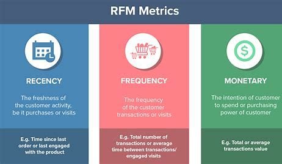

Utilized BigQuery for EDA and Data Mining on datasets. Developed SQL queries to aggregate, transform, filter, and extract insights. Calculated analytics metrics, and conducted user behavior analysis, and e-commerce performance to optimize strategies.

Implemented indicators based on Design Thinking principles. Utilized RFM analysis for customer segmentation, using DAX functions in Power BI to create dimension tables and interactive dashboards. Classified customers into 11 groups and developed retention, engagement, and acquisition strategies.
Data Handling and Cleaning: Managed missing values, encoded categorical variables, and scaled features.
Analyzed feature importance using a Decision Tree and visualized correlations with customer churn.
Identified Random Forest as the best model with over 95% accuracy.
Utilized BigQuery for EDA and data mining on the AdventureWorks2019 dataset. Developed SQL queries to analyze sales performance, customer retention, and inventory management. Key results include identifying top subcategories by sales growth, ranking top territories by order quantity, calculating seasonal discount costs, analyzing customer retention rates, and evaluating stock-to-sales ratios. Extracted insights to optimize strategies based on key metrics and trends.
Analyzed financial loan data using SQL and Power BI. Utilized SQL to perform complex data queries, extracting and categorizing loans. Identified key performance indicators such as total loan applications, funded amounts, and received amounts. Implemented indicators based on Design Thinking principles. Built a Power BI dashboard featuring various charts, KPI cards, and filters for detailed loan data visualization. Designed a comprehensive data analysis and reporting system to effectively monitor loan performance.